NetCoMi (Network Construction and Comparison for Microbiome Data) provides functionality for constructing, analyzing, and comparing networks suitable for the application on microbial compositional data. The R package implements the workflow proposed in
Stefanie Peschel, Christian L Müller, Erika von Mutius, Anne-Laure Boulesteix, Martin Depner (2020). NetCoMi: network construction and comparison for microbiome data in R. Briefings in Bioinformatics, bbaa290. https://doi.org/10.1093/bib/bbaa290.
NetCoMi allows its users to construct, analyze, and compare microbial association or dissimilarity networks in a fast and reproducible manner. Starting with a read count matrix originating from a sequencing process, the pipeline includes a wide range of existing methods for treating zeros in the data, normalization, computing microbial associations or dissimilarities, and sparsifying the resulting association/ dissimilarity matrix. These methods can be combined in a modular fashion to generate microbial networks. NetCoMi can either be used for constructing, analyzing and visualizing a single network, or for comparing two networks in a graphical as well as a quantitative manner, including statistical tests. The package furthermore offers functionality for constructing differential networks, where only differentially associated taxa are connected.
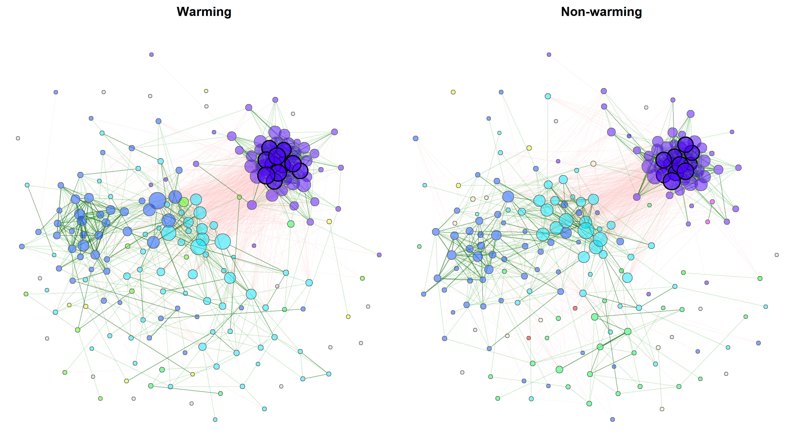
Exemplary network comparison using soil microbiome data (‘soilrep’ data from phyloseq package). Microbial associations are compared between the two experimantal settings ‘warming’ and ‘non-warming’ using the same layout in both groups.
Table of Contents
Methods included in NetCoMi
Here is an overview of methods available for network construction, together with some information on their implementation in R:
Association measures:
- Pearson coefficient (
cor()fromstatspackage) - Spearman coefficient (
cor()fromstatspackage) - Biweight Midcorrelation
bicor()fromWGCNApackage - SparCC (
sparcc()fromSpiecEasipackage) - CCLasso (R code on GitHub)
- CCREPE (
ccrepepackage) - SpiecEasi (
SpiecEasipackage) - SPRING (
SPRINGpackage) - gCoda (R code on GitHub)
- propr (
proprpackage)
Dissimilarity measures:
- Euclidean distance (
vegdist()fromveganpackage) - Bray-Curtis dissimilarity (
vegdist()fromveganpackage) - Kullback-Leibler divergence (KLD) (
KLD()fromLaplacesDemonpackage) - Jeffrey divergence (own code using
KLD()fromLaplacesDemonpackage) - Jensen-Shannon divergence (own code using
KLD()fromLaplacesDemonpackage) - Compositional KLD (own implementation following Martin-Fernández et al. (1999))
- Aitchison distance (
vegdist()andclr()fromSpiecEasipackage)
Methods for zero replacement:
- Add a predefined pseudo count to the count table
- Replace only zeros in the count table by a predefined pseudo count (ratios between non-zero values are preserved)
- Multiplicative replacement (
multReplfromzCompositionspackage) - Modified EM alr-algorithm (
lrEMfromzCompositionspackage) - Bayesian-multiplicative replacement (
cmultReplfromzCompositionspackage)
Normalization methods:
- Total Sum Scaling (TSS) (own implementation)
- Cumulative Sum Scaling (CSS) (
cumNormMatfrommetagenomeSeqpackage) - Common Sum Scaling (COM) (own implementation)
- Rarefying (
rrarefyfromveganpackage) - Variance Stabilizing Transformation (VST) (
varianceStabilizingTransformationfromDESeq2package) - Centered log-ratio (clr) transformation (
clr()fromSpiecEasipackage))
TSS, CSS, COM, VST, and the clr transformation are described in (Badri et al. 2020).
Installation
# Required packages
install.packages("devtools")
install.packages("BiocManager")
# Install NetCoMi
devtools::install_github("stefpeschel/NetCoMi",
dependencies = c("Depends", "Imports", "LinkingTo"),
repos = c("https://cloud.r-project.org/",
BiocManager::repositories()))If there are any errors during installation, please install the missing dependencies manually.
In particular the automatic installation of SPRING and SpiecEasi (only available on GitHub) does sometimes not work. These packages can be installed as follows (the order is important because SPRING depends on SpiecEasi):
devtools::install_github("zdk123/SpiecEasi")
devtools::install_github("GraceYoon/SPRING")Packages that are optionally required in certain settings are not installed together with NetCoMi. These can be installed automatically using:
installNetCoMiPacks()
# Please check:
?installNetCoMiPacks()If not installed via installNetCoMiPacks(), the required package is installed by the respective NetCoMi function when needed.
Bioconda
Thanks to daydream-boost, NetCoMi can also be installed from conda bioconda channel with
Development version
Everyone who wants to use new features not included in any releases is invited to install NetCoMi’s development version:
devtools::install_github("stefpeschel/NetCoMi",
ref = "develop",
dependencies = c("Depends", "Imports", "LinkingTo"),
repos = c("https://cloud.r-project.org/",
BiocManager::repositories()))Please check the NEWS document for features implemented on develop branch.
Usage
We use the American Gut data from SpiecEasi package to look at some examples of how NetCoMi is applied. NetCoMi’s main functions are netConstruct() for network construction, netAnalyze() for network analysis, and netCompare() for network comparison. As you will see in the following, these three functions must be executed in the aforementioned order. A further function is diffnet() for constructing a differential association network. diffnet() must be applied to the object returned by netConstruct().
First of all, we load NetCoMi and the data from American Gut Project (provided by SpiecEasi, which is automatically loaded together with NetCoMi).
Network with SPRING as association measure
Network construction and analysis
We firstly construct a single association network using SPRING for estimating associations (conditional dependence) between OTUs.
The data are filtered within netConstruct() as follows:
- Only samples with a total number of reads of at least 1000 are included (argument
filtSamp). - Only the 50 taxa with highest frequency are included (argument
filtTax).
measure defines the association or dissimilarity measure, which is "spring" in our case. Additional arguments are passed to SPRING() via measurePar. nlambda and rep.num are set to 10 for a decreased execution time, but should be higher for real data. Rmethod is set to “approx” to estimate the correlations using a hybrid multi-linear interpolation approach proposed by Yoon, Müller, and Gaynanova (2020). This method considerably reduces the runtime while controlling the approximation error.
Normalization as well as zero handling is performed internally in SPRING(). Hence, we set normMethod and zeroMethod to "none".
We furthermore set sparsMethod to "none" because SPRING returns a sparse network where no additional sparsification step is necessary.
We use the “signed” method for transforming associations into dissimilarities (argument dissFunc). In doing so, strongly negatively associated taxa have a high dissimilarity and, in turn, a low similarity, which corresponds to edge weights in the network plot.
The verbose argument is set to 3 so that all messages generated by netConstruct() as well as messages of external functions are printed.
net_spring <- netConstruct(amgut1.filt,
filtTax = "highestFreq",
filtTaxPar = list(highestFreq = 50),
filtSamp = "totalReads",
filtSampPar = list(totalReads = 1000),
measure = "spring",
measurePar = list(nlambda=10,
rep.num=10,
Rmethod = "approx"),
normMethod = "none",
zeroMethod = "none",
sparsMethod = "none",
dissFunc = "signed",
verbose = 2,
seed = 123456)## Checking input arguments ... Done.
## Data filtering ...
## 77 taxa removed.
## 50 taxa and 289 samples remaining.
##
## Calculate 'spring' associations ... Registered S3 method overwritten by 'dendextend':
## method from
## rev.hclust vegan
## Registered S3 method overwritten by 'seriation':
## method from
## reorder.hclust vegan
## Done.Analyzing the constructed network
NetCoMi’s netAnalyze() function is used for analyzing the constructed network(s).
Here, centrLCC is set to TRUE meaning that centralities are calculated only for nodes in the largest connected component (LCC).
Clusters are identified using greedy modularity optimization (by cluster_fast_greedy() from igraph package).
Hubs are nodes with an eigenvector centrality value above the empirical 95% quantile of all eigenvector centralities in the network (argument hubPar).
weightDeg and normDeg are set to FALSE so that the degree of a node is simply defined as number of nodes that are adjacent to the node.
By default, a heatmap of the Graphlet Correlation Matrix (GCM) is returned (with graphlet correlations in the upper triangle and significance codes resulting from Student’s t-test in the lower triangle). See ?calcGCM and ?testGCM for details.
props_spring <- netAnalyze(net_spring,
centrLCC = TRUE,
clustMethod = "cluster_fast_greedy",
hubPar = "eigenvector",
weightDeg = FALSE, normDeg = FALSE)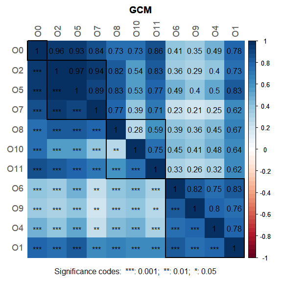
#?summary.microNetProps
summary(props_spring, numbNodes = 5L)##
## Component sizes
## ```````````````
## size: 48 1
## #: 1 2
## ______________________________
## Global network properties
## `````````````````````````
## Largest connected component (LCC):
##
## Relative LCC size 0.96000
## Clustering coefficient 0.33594
## Modularity 0.53407
## Positive edge percentage 88.34951
## Edge density 0.09131
## Natural connectivity 0.02855
## Vertex connectivity 1.00000
## Edge connectivity 1.00000
## Average dissimilarity* 0.97035
## Average path length** 2.36912
##
## Whole network:
##
## Number of components 3.00000
## Clustering coefficient 0.33594
## Modularity 0.53407
## Positive edge percentage 88.34951
## Edge density 0.08408
## Natural connectivity 0.02714
## -----
## *: Dissimilarity = 1 - edge weight
## **: Path length = Units with average dissimilarity
##
## ______________________________
## Clusters
## - In the whole network
## - Algorithm: cluster_fast_greedy
## ````````````````````````````````
##
## name: 0 1 2 3 4 5
## #: 2 12 17 10 5 4
##
## ______________________________
## Hubs
## - In alphabetical/numerical order
## - Based on empirical quantiles of centralities
## ```````````````````````````````````````````````
## 190597
## 288134
## 311477
##
## ______________________________
## Centrality measures
## - In decreasing order
## - Centrality of disconnected components is zero
## ````````````````````````````````````````````````
## Degree (unnormalized):
##
## 288134 10
## 190597 9
## 311477 9
## 188236 8
## 199487 8
##
## Betweenness centrality (normalized):
##
## 302160 0.31360
## 268332 0.24144
## 259569 0.23404
## 470973 0.21462
## 119010 0.19611
##
## Closeness centrality (normalized):
##
## 288134 0.68426
## 311477 0.68413
## 199487 0.68099
## 302160 0.67518
## 188236 0.66852
##
## Eigenvector centrality (normalized):
##
## 288134 1.00000
## 311477 0.94417
## 190597 0.90794
## 199487 0.85439
## 188236 0.72684Plotting the GCM heatmap manually
plotHeat(mat = props_spring$graphletLCC$gcm1,
pmat = props_spring$graphletLCC$pAdjust1,
type = "mixed",
title = "GCM",
colorLim = c(-1, 1),
mar = c(2, 0, 2, 0))
# Add rectangles highlighting the four types of orbits
graphics::rect(xleft = c( 0.5, 1.5, 4.5, 7.5),
ybottom = c(11.5, 7.5, 4.5, 0.5),
xright = c( 1.5, 4.5, 7.5, 11.5),
ytop = c(10.5, 10.5, 7.5, 4.5),
lwd = 2, xpd = NA)
text(6, -0.2, xpd = NA,
"Significance codes: ***: 0.001; **: 0.01; *: 0.05")
Visualizing the network
We use the determined clusters as node colors and scale the node sizes according to the node’s eigenvector centrality.
# help page
?plot.microNetProps
p <- plot(props_spring,
nodeColor = "cluster",
nodeSize = "eigenvector",
title1 = "Network on OTU level with SPRING associations",
showTitle = TRUE,
cexTitle = 2.3)
legend(0.7, 1.1, cex = 2.2, title = "estimated association:",
legend = c("+","-"), lty = 1, lwd = 3, col = c("#009900","red"),
bty = "n", horiz = TRUE)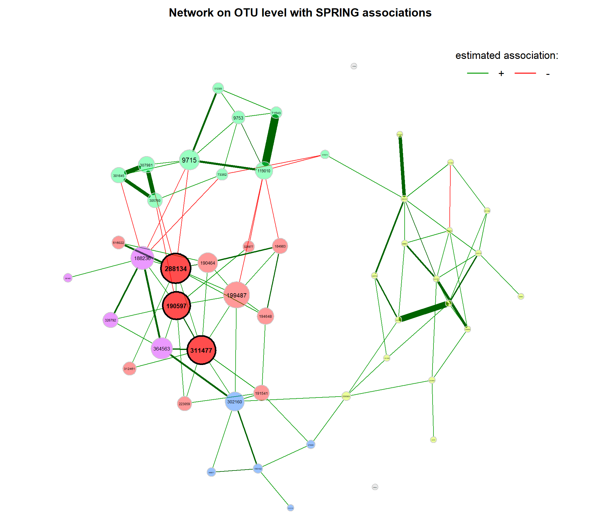
Note that edge weights are (non-negative) similarities, however, the edges belonging to negative estimated associations are colored in red by default (negDiffCol = TRUE).
By default, a different transparency value is added to edges with an absolute weight below and above the cut value (arguments edgeTranspLow and edgeTranspHigh). The determined cut value can be read out as follows:
p$q1$Arguments$cutExport to Gephi
Some users may be interested in how to export the network to Gephi. Here’s an example:
# For Gephi, we have to generate an edge list with IDs.
# The corresponding labels (and also further node features) are stored as node list.
# Create edge object from the edge list exported by netConstruct()
edges <- dplyr::select(net_spring$edgelist1, v1, v2)
# Add Source and Target variables (as IDs)
edges$Source <- as.numeric(factor(edges$v1))
edges$Target <- as.numeric(factor(edges$v2))
edges$Type <- "Undirected"
edges$Weight <- net_spring$edgelist1$adja
nodes <- unique(edges[,c('v1','Source')])
colnames(nodes) <- c("Label", "Id")
# Add category with clusters (can be used as node colors in Gephi)
nodes$Category <- props_spring$clustering$clust1[nodes$Label]
edges <- dplyr::select(edges, Source, Target, Type, Weight)
write.csv(nodes, file = "nodes.csv", row.names = FALSE)
write.csv(edges, file = "edges.csv", row.names = FALSE)The exported .csv files can then be imported into Gephi.
Network with Pearson correlation as association measure
Let’s construct another network using Pearson’s correlation coefficient as association measure. The input is now a phyloseq object.
Since Pearson correlations may lead to compositional effects when applied to sequencing data, we use the clr transformation as normalization method. Zero treatment is necessary in this case.
A threshold of 0.3 is used as sparsification method, so that only OTUs with an absolute correlation greater than or equal to 0.3 are connected.
net_pears <- netConstruct(amgut2.filt.phy,
measure = "pearson",
normMethod = "clr",
zeroMethod = "multRepl",
sparsMethod = "threshold",
thresh = 0.3,
verbose = 3)## Checking input arguments ... Done.
## 2 rows with zero sum removed.
## 138 taxa and 294 samples remaining.
##
## Zero treatment:
## Execute multRepl() ... Done.
##
## Normalization:
## Execute clr(){SpiecEasi} ... Done.
##
## Calculate 'pearson' associations ... Done.
##
## Sparsify associations via 'threshold' ... Done.Network analysis and plotting:
props_pears <- netAnalyze(net_pears,
clustMethod = "cluster_fast_greedy")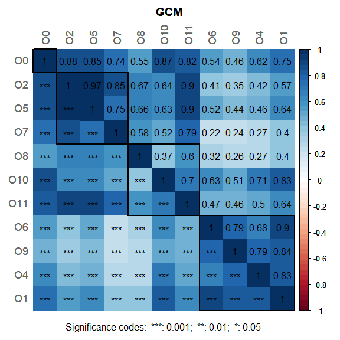
plot(props_pears,
nodeColor = "cluster",
nodeSize = "eigenvector",
title1 = "Network on OTU level with Pearson correlations",
showTitle = TRUE,
cexTitle = 2.3)
legend(0.7, 1.1, cex = 2.2, title = "estimated correlation:",
legend = c("+","-"), lty = 1, lwd = 3, col = c("#009900","red"),
bty = "n", horiz = TRUE)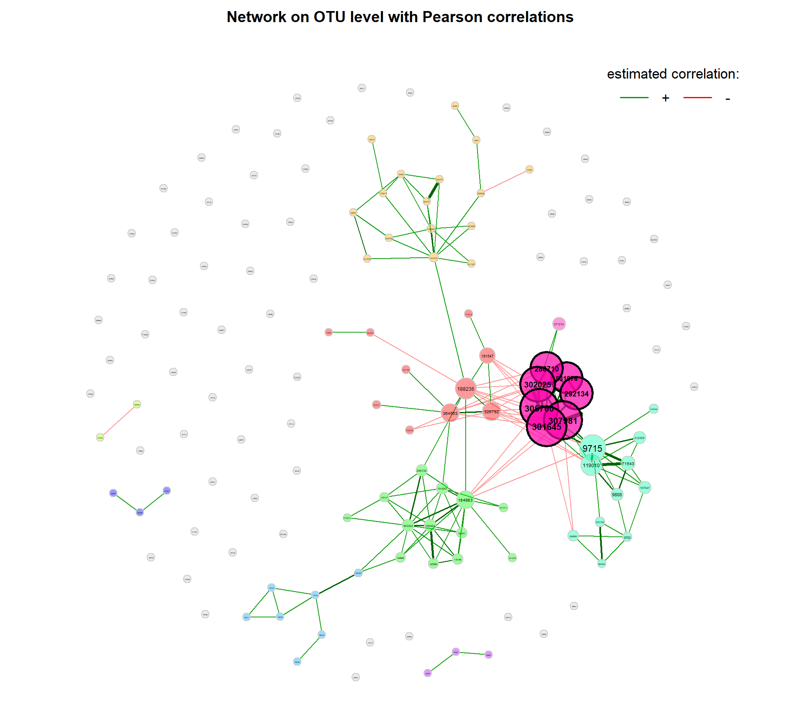
Let’s improve the visualization by changing the following arguments:
-
repulsion = 0.8: Place the nodes further apart. -
rmSingles = TRUE: Single nodes are removed. -
labelScale = FALSEandcexLabels = 1.6: All labels have equal size and are enlarged to improve readability of small node’s labels. -
nodeSizeSpread = 3(default is 4): Node sizes are more similar if the value is decreased. This argument (in combination withcexNodes) is useful to enlarge small nodes while keeping the size of big nodes. -
hubBorderCol = "darkgray": Change border color for a better readability of the node labels.
plot(props_pears,
nodeColor = "cluster",
nodeSize = "eigenvector",
repulsion = 0.8,
rmSingles = TRUE,
labelScale = FALSE,
cexLabels = 1.6,
nodeSizeSpread = 3,
cexNodes = 2,
hubBorderCol = "darkgray",
title1 = "Network on OTU level with Pearson correlations",
showTitle = TRUE,
cexTitle = 2.3)
legend(0.7, 1.1, cex = 2.2, title = "estimated correlation:",
legend = c("+","-"), lty = 1, lwd = 3, col = c("#009900","red"),
bty = "n", horiz = TRUE)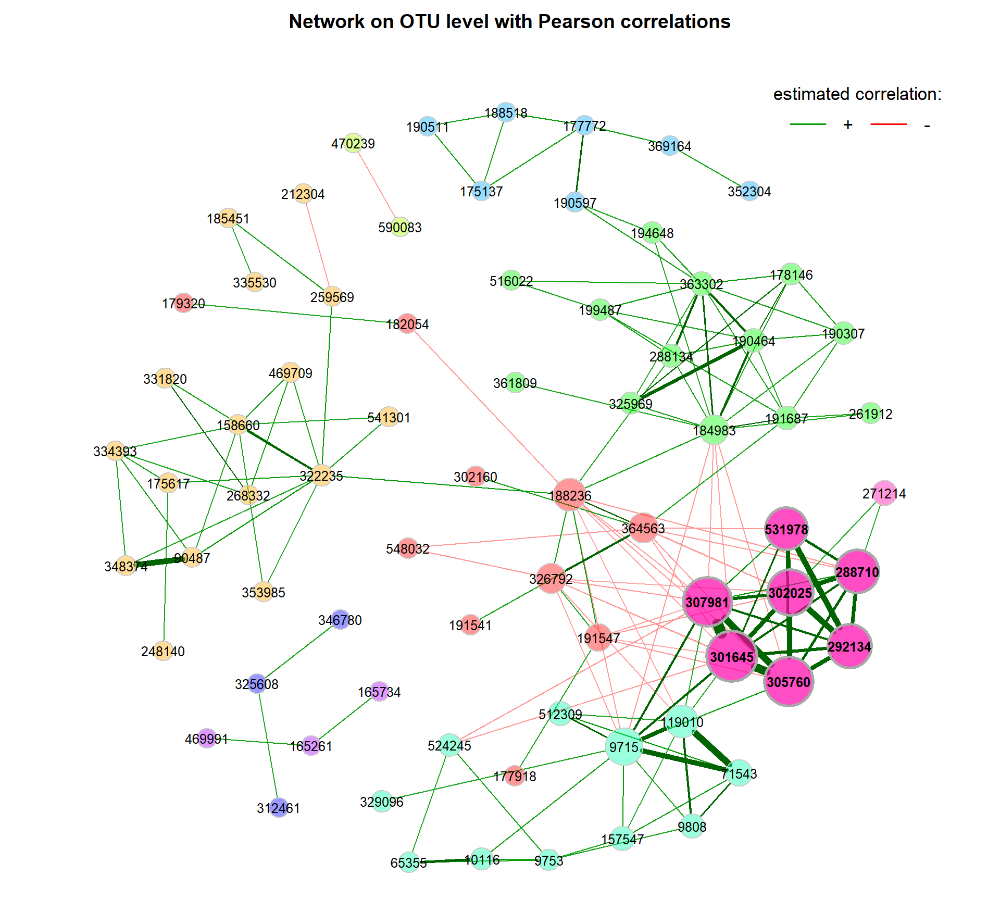
Edge filtering
The network can be sparsified further using the arguments edgeFilter (edges are filtered before the layout is computed) and edgeInvisFilter (edges are removed after the layout is computed and thus just made “invisible”).
plot(props_pears,
edgeInvisFilter = "threshold",
edgeInvisPar = 0.4,
nodeColor = "cluster",
nodeSize = "eigenvector",
repulsion = 0.8,
rmSingles = TRUE,
labelScale = FALSE,
cexLabels = 1.6,
nodeSizeSpread = 3,
cexNodes = 2,
hubBorderCol = "darkgray",
title1 = paste0("Network on OTU level with Pearson correlations",
"\n(edge filter: threshold = 0.4)"),
showTitle = TRUE,
cexTitle = 2.3)
legend(0.7, 1.1, cex = 2.2, title = "estimated correlation:",
legend = c("+","-"), lty = 1, lwd = 3, col = c("#009900","red"),
bty = "n", horiz = TRUE)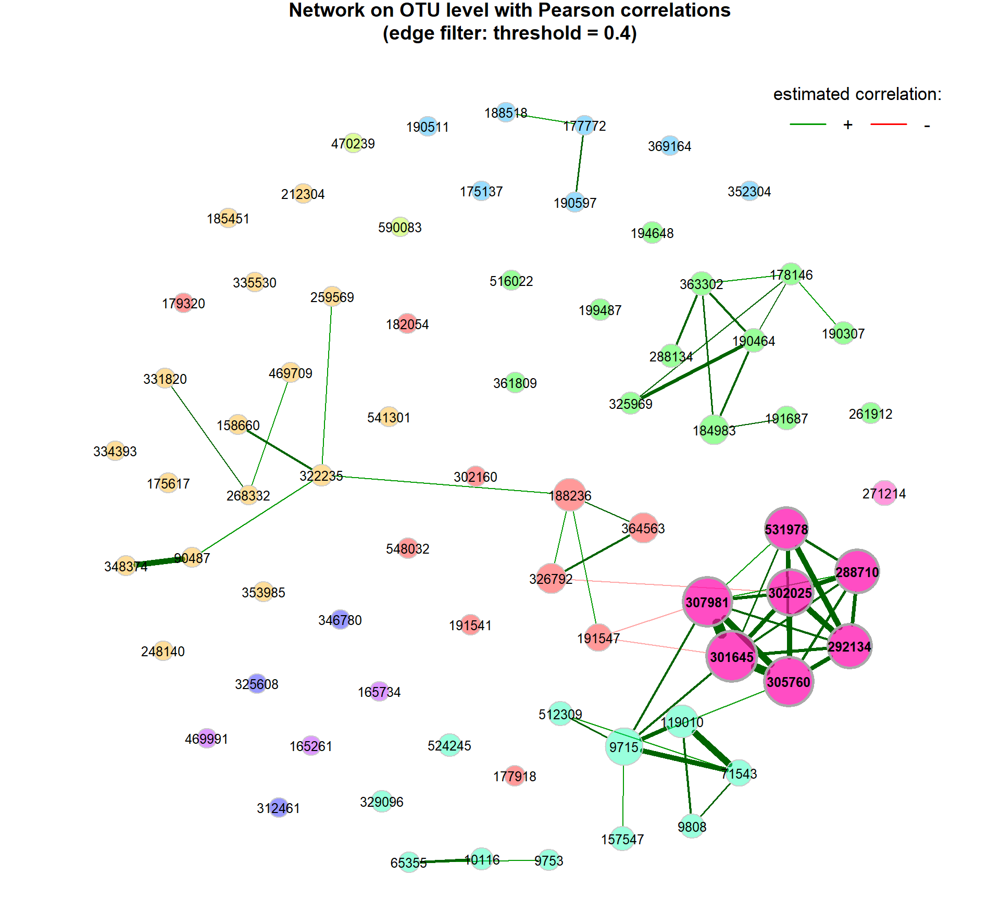
Using the “unsigned” transformation
In the above network, the “signed” transformation was used to transform the estimated associations into dissimilarities. This leads to a network where strongly positive correlated taxa have a high edge weight (1 if the correlation equals 1) and strongly negative correlated taxa have a low edge weight (0 if the correlation equals -1).
We now use the “unsigned” transformation so that the edge weight between strongly correlated taxa is high, no matter of the sign. Hence, a correlation of -1 and 1 would lead to an edge weight of 1.
Network construction
We can pass the network object from before to netConstruct() to save runtime.
net_pears_unsigned <- netConstruct(data = net_pears$assoEst1,
dataType = "correlation",
sparsMethod = "threshold",
thresh = 0.3,
dissFunc = "unsigned",
verbose = 3)Estimated correlations and adjacency values
The following histograms demonstrate how the estimated correlations are transformed into adjacencies (= sparsified similarities for weighted networks).
Sparsified estimated correlations:
hist(net_pears$assoMat1, 100, xlim = c(-1, 1), ylim = c(0, 400),
xlab = "Estimated correlation",
main = "Estimated correlations after sparsification")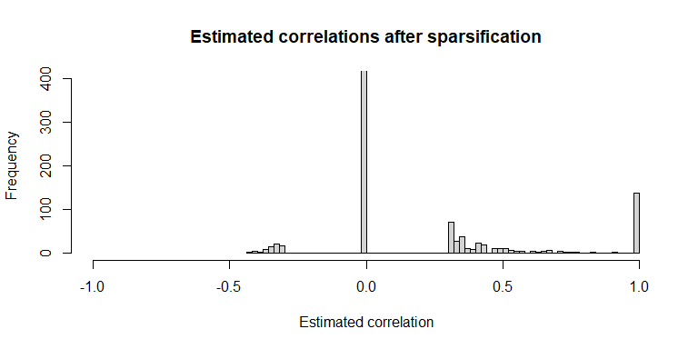
Adjacency values computed using the “signed” transformation (values different from 0 and 1 will be edges in the network):
hist(net_pears$adjaMat1, 100, ylim = c(0, 400),
xlab = "Adjacency values",
main = "Adjacencies (with \"signed\" transformation)")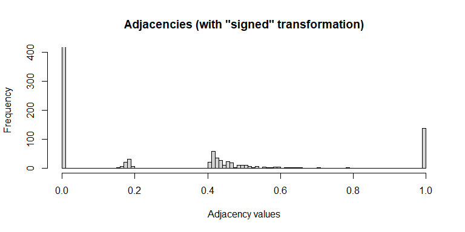
Adjacency values computed using the “unsigned” transformation:
hist(net_pears_unsigned$adjaMat1, 100, ylim = c(0, 400),
xlab = "Adjacency values",
main = "Adjacencies (with \"unsigned\" transformation)")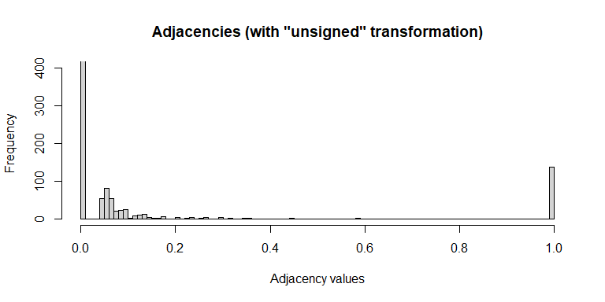
Network analysis and plotting
props_pears_unsigned <- netAnalyze(net_pears_unsigned,
clustMethod = "cluster_fast_greedy",
gcmHeat = FALSE)
plot(props_pears_unsigned,
nodeColor = "cluster",
nodeSize = "eigenvector",
repulsion = 0.9,
rmSingles = TRUE,
labelScale = FALSE,
cexLabels = 1.6,
nodeSizeSpread = 3,
cexNodes = 2,
hubBorderCol = "darkgray",
title1 = "Network with Pearson correlations and \"unsigned\" transformation",
showTitle = TRUE,
cexTitle = 2.3)
legend(0.7, 1.1, cex = 2.2, title = "estimated correlation:",
legend = c("+","-"), lty = 1, lwd = 3, col = c("#009900","red"),
bty = "n", horiz = TRUE)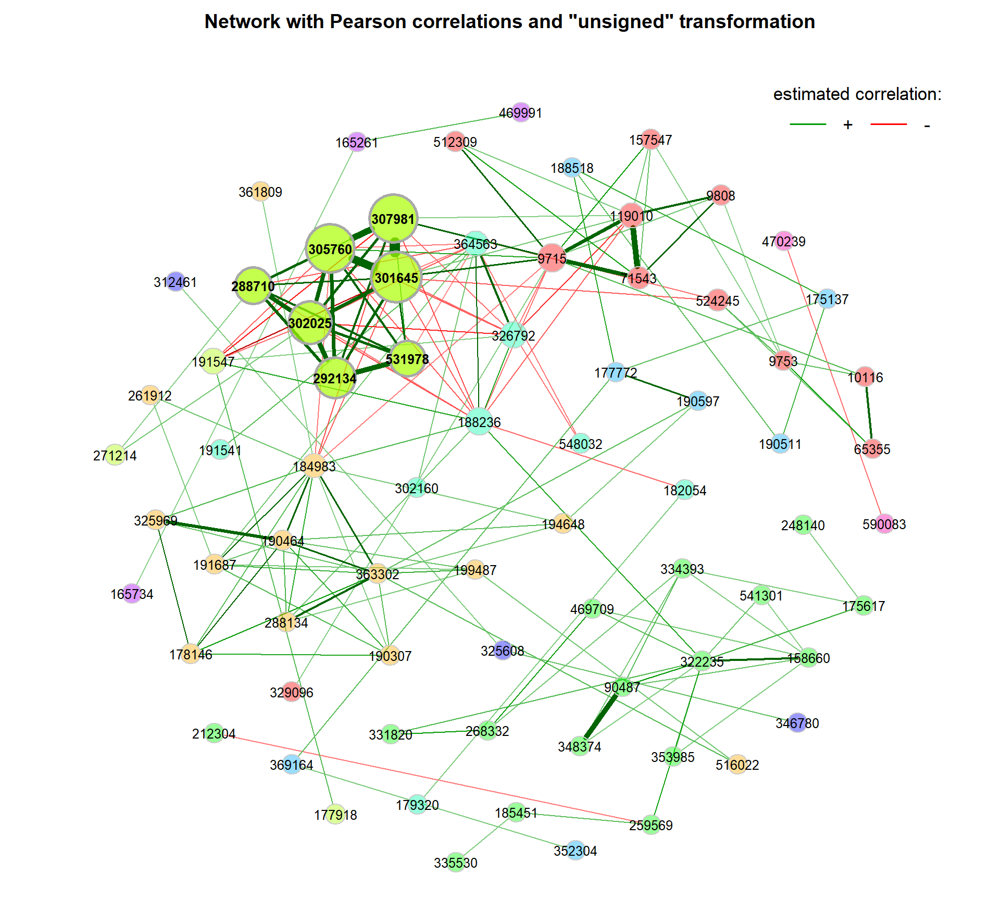
While with the “signed” transformation, positive correlated taxa are likely to belong to the same cluster, with the “unsigned” transformation clusters contain strongly positive and negative correlated taxa.
Network on genus level
We now construct a further network, where OTUs are agglomerated to genera.
library(phyloseq)
data("amgut2.filt.phy")
# Agglomerate to genus level
amgut_genus <- tax_glom(amgut2.filt.phy, taxrank = "Rank6")
# Taxonomic table
taxtab <- as(tax_table(amgut_genus), "matrix")
# Rename taxonomic table and make Rank6 (genus) unique
amgut_genus_renamed <- renameTaxa(amgut_genus,
pat = "<name>",
substPat = "<name>_<subst_name>(<subst_R>)",
numDupli = "Rank6")
# Network construction and analysis
net_genus <- netConstruct(amgut_genus_renamed,
taxRank = "Rank6",
measure = "pearson",
zeroMethod = "multRepl",
normMethod = "clr",
sparsMethod = "threshold",
thresh = 0.3,
verbose = 3)## Checking input arguments ...
## Done.
## 2 rows with zero sum removed.
## 43 taxa and 294 samples remaining.
##
## Zero treatment:
## Execute multRepl() ... Done.
##
## Normalization:
## Execute clr(){SpiecEasi} ... Done.
##
## Calculate 'pearson' associations ... Done.
##
## Sparsify associations via 'threshold' ... Done.
props_genus <- netAnalyze(net_genus, clustMethod = "cluster_fast_greedy")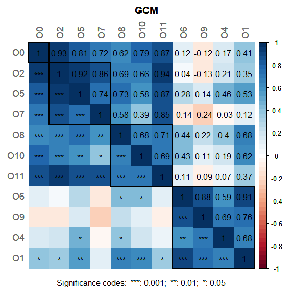
Network plots
Modifications:
- Fruchterman-Reingold layout algorithm from
igraphpackage used (passed toplotas matrix) - Shortened labels (using the “intelligent” method, which avoids duplicates)
- Fixed node sizes, where hubs are enlarged
- Node color is gray for all nodes (transparancy is lower for hub nodes by default)
# Compute layout
graph3 <- igraph::graph_from_adjacency_matrix(net_genus$adjaMat1,
weighted = TRUE)
set.seed(123456)
lay_fr <- igraph::layout_with_fr(graph3)
# Row names of the layout matrix must match the node names
rownames(lay_fr) <- rownames(net_genus$adjaMat1)
plot(props_genus,
layout = lay_fr,
shortenLabels = "intelligent",
labelLength = 10,
labelPattern = c(5, "'", 3, "'", 3),
nodeSize = "fix",
nodeColor = "gray",
cexNodes = 0.8,
cexHubs = 1.1,
cexLabels = 1.2,
title1 = "Network on genus level with Pearson correlations",
showTitle = TRUE,
cexTitle = 2.3)
legend(0.7, 1.1, cex = 2.2, title = "estimated correlation:",
legend = c("+","-"), lty = 1, lwd = 3, col = c("#009900","red"),
bty = "n", horiz = TRUE)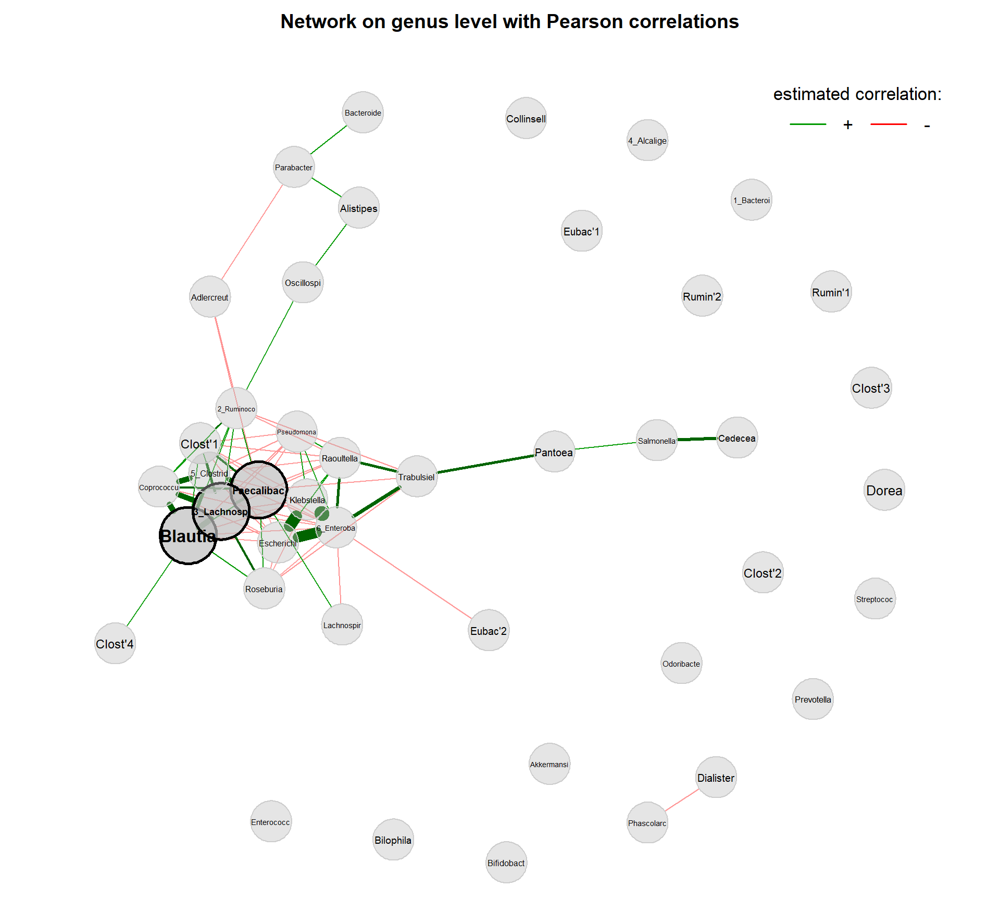
Since the above visualization is obviously not optimal, we make further adjustments:
- This time, the Fruchterman-Reingold layout algorithm is computed within the plot function and thus applied to the “reduced” network without singletons
- Labels are not scaled to node sizes
- Single nodes are removed
- Node sizes are scaled to the column sums of clr-transformed data
- Node colors represent the determined clusters
- Border color of hub nodes is changed from black to darkgray
- Label size of hubs is enlarged
set.seed(123456)
plot(props_genus,
layout = "layout_with_fr",
shortenLabels = "intelligent",
labelLength = 10,
labelPattern = c(5, "'", 3, "'", 3),
labelScale = FALSE,
rmSingles = TRUE,
nodeSize = "clr",
nodeColor = "cluster",
hubBorderCol = "darkgray",
cexNodes = 2,
cexLabels = 1.5,
cexHubLabels = 2,
title1 = "Network on genus level with Pearson correlations",
showTitle = TRUE,
cexTitle = 2.3)
legend(0.7, 1.1, cex = 2.2, title = "estimated correlation:",
legend = c("+","-"), lty = 1, lwd = 3, col = c("#009900","red"),
bty = "n", horiz = TRUE)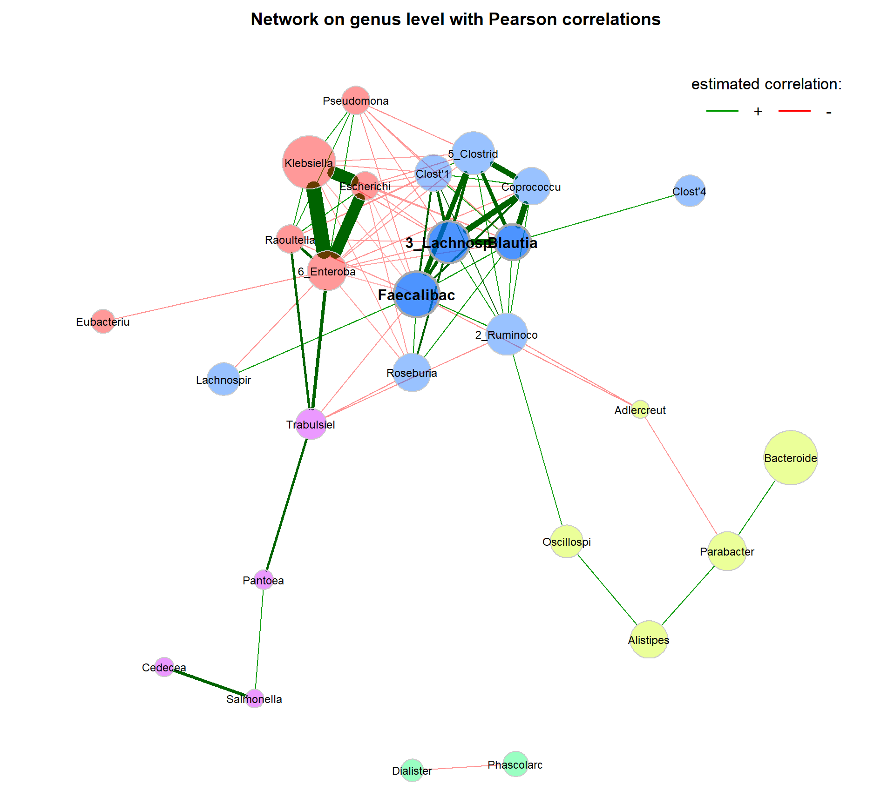
Let’s check whether the largest nodes are actually those with highest column sums in the matrix with normalized counts returned by netConstruct().
## Bacteroides Klebsiella Faecalibacterium
## 1200.7971 1137.4928 708.0877
## 5_Clostridiales(O) 2_Ruminococcaceae(F) 3_Lachnospiraceae(F)
## 549.2647 502.1889 493.7558
## 6_Enterobacteriaceae(F) Roseburia Parabacteroides
## 363.3841 333.8737 328.0495
## Coprococcus
## 274.4082In order to further improve our plot, we use the following modifications:
- This time, we choose the “spring” layout as part of
qgraph()(the function is generally used for network plotting in NetCoMi) - A repulsion value below 1 places the nodes further apart
- Labels are not shortened anymore
- Nodes (bacteria on genus level) are colored according to the respective phylum
- Edges representing positive associations are colored in blue, negative ones in orange (just to give an example for alternative edge coloring)
- Transparency is increased for edges with high weight to improve the readability of node labels
# Get phyla names
taxtab <- as(tax_table(amgut_genus_renamed), "matrix")
phyla <- as.factor(gsub("p__", "", taxtab[, "Rank2"]))
names(phyla) <- taxtab[, "Rank6"]
#table(phyla)
# Define phylum colors
phylcol <- c("cyan", "blue3", "red", "lawngreen", "yellow", "deeppink")
plot(props_genus,
layout = "spring",
repulsion = 0.84,
shortenLabels = "none",
charToRm = "g__",
labelScale = FALSE,
rmSingles = TRUE,
nodeSize = "clr",
nodeSizeSpread = 4,
nodeColor = "feature",
featVecCol = phyla,
colorVec = phylcol,
posCol = "darkturquoise",
negCol = "orange",
edgeTranspLow = 0,
edgeTranspHigh = 40,
cexNodes = 2,
cexLabels = 2,
cexHubLabels = 2.5,
title1 = "Network on genus level with Pearson correlations",
showTitle = TRUE,
cexTitle = 2.3)
# Colors used in the legend should be equally transparent as in the plot
phylcol_transp <- colToTransp(phylcol, 60)
legend(-1.2, 1.2, cex = 2, pt.cex = 2.5, title = "Phylum:",
legend=levels(phyla), col = phylcol_transp, bty = "n", pch = 16)
legend(0.7, 1.1, cex = 2.2, title = "estimated correlation:",
legend = c("+","-"), lty = 1, lwd = 3, col = c("darkturquoise","orange"),
bty = "n", horiz = TRUE)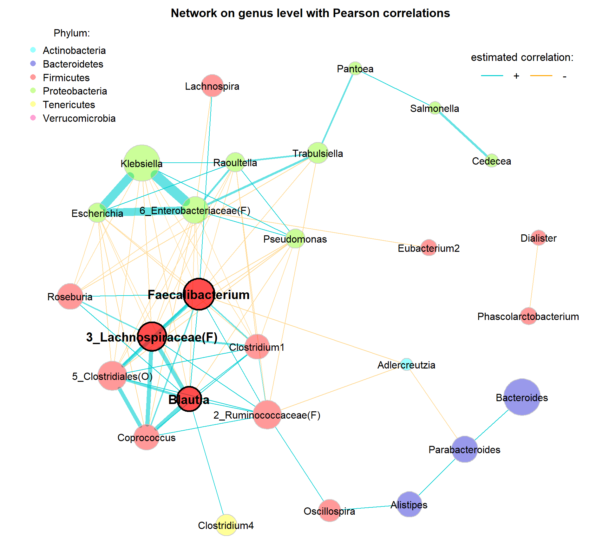
Using an association matrix as input
The QMP data set provided by the SPRING package is used to demonstrate how NetCoMi is used to analyze a precomputed network (given as association matrix).
The data set contains quantitative count data (true absolute values), which SPRING can deal with. See ?QMP for details.
nlambda and rep.num are set to 10 for a decreased execution time, but should be higher for real data.
library(SPRING)
# Load the QMP data set
data("QMP")
# Run SPRING for association estimation
fit_spring <- SPRING(QMP,
quantitative = TRUE,
lambdaseq = "data-specific",
nlambda = 10,
rep.num = 10,
seed = 123456,
ncores = 1,
Rmethod = "approx",
verbose = FALSE)
# Optimal lambda
opt.K <- fit_spring$output$stars$opt.index
# Association matrix
assoMat <- as.matrix(SpiecEasi::symBeta(fit_spring$output$est$beta[[opt.K]],
mode = "ave"))
rownames(assoMat) <- colnames(assoMat) <- colnames(QMP)The association matrix is now passed to netConstruct to start the usual NetCoMi workflow. Note that the dataType argument must be set appropriately.
# Network construction and analysis
net_asso <- netConstruct(data = assoMat,
dataType = "condDependence",
sparsMethod = "none",
verbose = 0)
props_asso <- netAnalyze(net_asso, clustMethod = "hierarchical")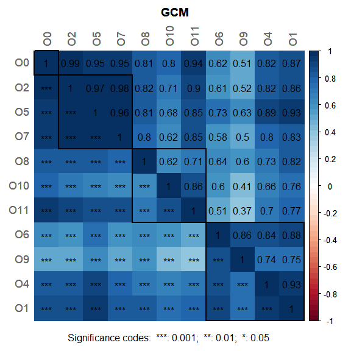
plot(props_asso,
layout = "spring",
repulsion = 1.2,
shortenLabels = "none",
labelScale = TRUE,
rmSingles = TRUE,
nodeSize = "eigenvector",
nodeSizeSpread = 2,
nodeColor = "cluster",
hubBorderCol = "gray60",
cexNodes = 1.8,
cexLabels = 2,
cexHubLabels = 2.2,
title1 = "Network for QMP data",
showTitle = TRUE,
cexTitle = 2.3)
legend(0.7, 1.1, cex = 2.2, title = "estimated association:",
legend = c("+","-"), lty = 1, lwd = 3, col = c("#009900","red"),
bty = "n", horiz = TRUE)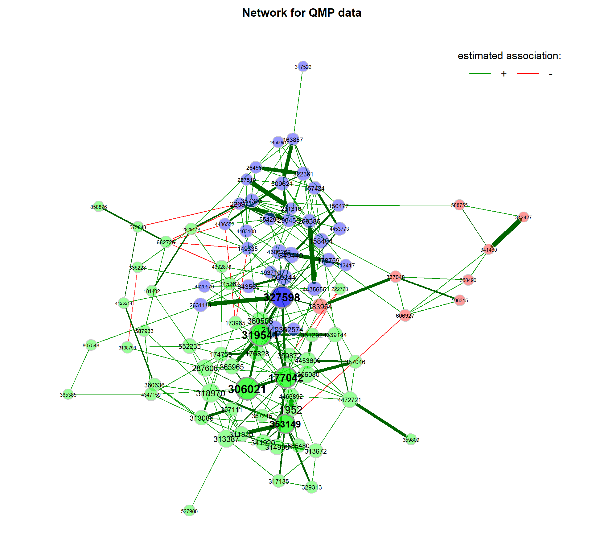
Network comparison
Now let’s look how NetCoMi is used to compare two networks.
Network construction
The data set is split by "SEASONAL_ALLERGIES" leading to two subsets of samples (with and without seasonal allergies). We ignore the “None” group.
# Split the phyloseq object into two groups
amgut_season_yes <- phyloseq::subset_samples(amgut2.filt.phy,
SEASONAL_ALLERGIES == "yes")
amgut_season_no <- phyloseq::subset_samples(amgut2.filt.phy,
SEASONAL_ALLERGIES == "no")
amgut_season_yes## phyloseq-class experiment-level object
## otu_table() OTU Table: [ 138 taxa and 121 samples ]
## sample_data() Sample Data: [ 121 samples by 166 sample variables ]
## tax_table() Taxonomy Table: [ 138 taxa by 7 taxonomic ranks ]
amgut_season_no## phyloseq-class experiment-level object
## otu_table() OTU Table: [ 138 taxa and 163 samples ]
## sample_data() Sample Data: [ 163 samples by 166 sample variables ]
## tax_table() Taxonomy Table: [ 138 taxa by 7 taxonomic ranks ]The 50 nodes with highest variance are selected for network construction to get smaller networks.
We filter the 121 samples (sample size of the smaller group) with highest frequency to make the sample sizes equal and thus ensure comparability.
n_yes <- phyloseq::nsamples(amgut_season_yes)
# Network construction
net_season <- netConstruct(data = amgut_season_no,
data2 = amgut_season_yes,
filtTax = "highestVar",
filtTaxPar = list(highestVar = 50),
filtSamp = "highestFreq",
filtSampPar = list(highestFreq = n_yes),
measure = "spring",
measurePar = list(nlambda = 10,
rep.num = 10,
Rmethod = "approx"),
normMethod = "none",
zeroMethod = "none",
sparsMethod = "none",
dissFunc = "signed",
verbose = 2,
seed = 123456)## Checking input arguments ... Done.
## Data filtering ...
## 42 samples removed in data set 1.
## 0 samples removed in data set 2.
## 96 taxa removed in each data set.
## 1 rows with zero sum removed in group 2.
## 42 taxa and 121 samples remaining in group 1.
## 42 taxa and 120 samples remaining in group 2.
##
## Calculate 'spring' associations ... Done.
##
## Calculate associations in group 2 ... Done.Alternatively, a group vector could be passed to group, according to which the data set is split into two groups:
# Get count table
countMat <- phyloseq::otu_table(amgut2.filt.phy)
# netConstruct() expects samples in rows
countMat <- t(as(countMat, "matrix"))
group_vec <- phyloseq::get_variable(amgut2.filt.phy, "SEASONAL_ALLERGIES")
# Select the two groups of interest (level "none" is excluded)
sel <- which(group_vec %in% c("no", "yes"))
group_vec <- group_vec[sel]
countMat <- countMat[sel, ]
net_season <- netConstruct(countMat,
group = group_vec,
filtTax = "highestVar",
filtTaxPar = list(highestVar = 50),
filtSamp = "highestFreq",
filtSampPar = list(highestFreq = n_yes),
measure = "spring",
measurePar = list(nlambda=10,
rep.num=10,
Rmethod = "approx"),
normMethod = "none",
zeroMethod = "none",
sparsMethod = "none",
dissFunc = "signed",
verbose = 3,
seed = 123456)Network analysis
The object returned by netConstruct() containing both networks is again passed to netAnalyze(). Network properties are computed for both networks simultaneously.
To demonstrate further functionalities of netAnalyze(), we play around with the available arguments, even if the chosen setting might not be optimal.
-
centrLCC = FALSE: Centralities are calculated for all nodes (not only for the largest connected component). -
avDissIgnoreInf = TRUE: Nodes with an infinite dissimilarity are ignored when calculating the average dissimilarity. -
sPathNorm = FALSE: Shortest paths are not normalized by average dissimilarity. -
hubPar = c("degree", "eigenvector"): Hubs are nodes with highest degree and eigenvector centrality at the same time. -
lnormFit = TRUEandhubQuant = 0.9: A log-normal distribution is fitted to the centrality values to identify nodes with “highest” centrality values. Here, a node is identified as hub if for each of the three centrality measures, the node’s centrality value is above the 90% quantile of the fitted log-normal distribution. - The non-normalized centralities are used for all four measures.
Note! The arguments must be set carefully, depending on the research questions. NetCoMi’s default values are not generally preferable in all practical cases!
props_season <- netAnalyze(net_season,
centrLCC = FALSE,
avDissIgnoreInf = TRUE,
sPathNorm = FALSE,
clustMethod = "cluster_fast_greedy",
hubPar = c("degree", "eigenvector"),
hubQuant = 0.9,
lnormFit = TRUE,
normDeg = FALSE,
normBetw = FALSE,
normClose = FALSE,
normEigen = FALSE)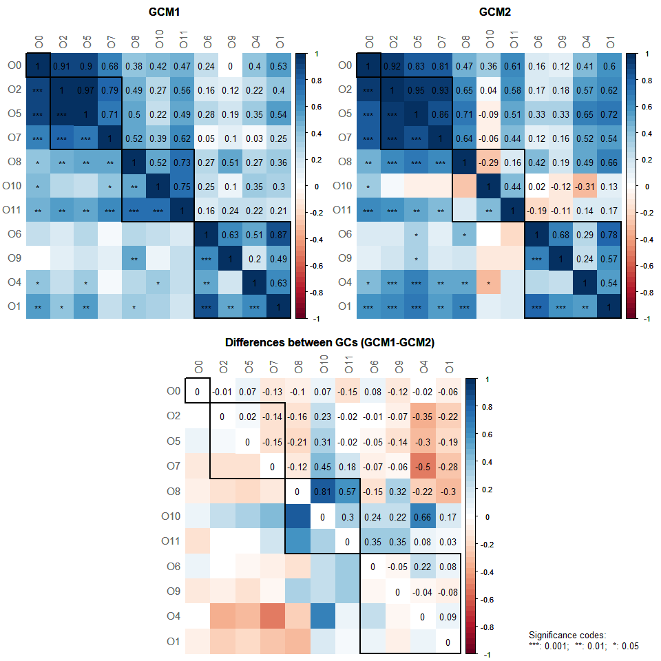
summary(props_season)##
## Component sizes
## ```````````````
## group '1':
## size: 28 1
## #: 1 14
## group '2':
## size: 31 8 1
## #: 1 1 3
## ______________________________
## Global network properties
## `````````````````````````
## Largest connected component (LCC):
## group '1' group '2'
## Relative LCC size 0.66667 0.73810
## Clustering coefficient 0.15161 0.27111
## Modularity 0.62611 0.45823
## Positive edge percentage 86.66667 100.00000
## Edge density 0.07937 0.12473
## Natural connectivity 0.04539 0.04362
## Vertex connectivity 1.00000 1.00000
## Edge connectivity 1.00000 1.00000
## Average dissimilarity* 0.67251 0.68178
## Average path length** 3.40008 1.86767
##
## Whole network:
## group '1' group '2'
## Number of components 15.00000 5.00000
## Clustering coefficient 0.15161 0.29755
## Modularity 0.62611 0.55684
## Positive edge percentage 86.66667 100.00000
## Edge density 0.03484 0.08130
## Natural connectivity 0.02826 0.03111
## -----
## *: Dissimilarity = 1 - edge weight
## **: Path length = Sum of dissimilarities along the path
##
## ______________________________
## Clusters
## - In the whole network
## - Algorithm: cluster_fast_greedy
## ````````````````````````````````
## group '1':
## name: 0 1 2 3 4 5
## #: 14 7 6 5 4 6
##
## group '2':
## name: 0 1 2 3 4 5
## #: 3 5 14 4 8 8
##
## ______________________________
## Hubs
## - In alphabetical/numerical order
## - Based on log-normal quantiles of centralities
## ```````````````````````````````````````````````
## group '1' group '2'
## 307981 322235
## 363302
##
## ______________________________
## Centrality measures
## - In decreasing order
## - Computed for the complete network
## ````````````````````````````````````
## Degree (unnormalized):
## group '1' group '2'
## 307981 5 2
## 9715 5 5
## 364563 4 4
## 259569 4 5
## 322235 3 9
## ______ ______
## 322235 3 9
## 363302 3 9
## 158660 2 6
## 188236 3 5
## 259569 4 5
##
## Betweenness centrality (unnormalized):
## group '1' group '2'
## 307981 231 0
## 331820 170 9
## 158660 162 80
## 188236 161 85
## 322235 159 126
## ______ ______
## 322235 159 126
## 363302 74 93
## 188236 161 85
## 158660 162 80
## 326792 17 58
##
## Closeness centrality (unnormalized):
## group '1' group '2'
## 307981 18.17276 7.80251
## 9715 15.8134 9.27254
## 188236 15.7949 23.24055
## 301645 15.30177 9.01509
## 364563 14.73566 21.21352
## ______ ______
## 322235 13.50232 26.36749
## 363302 12.30297 24.19703
## 158660 13.07106 23.31577
## 188236 15.7949 23.24055
## 326792 14.61391 22.52157
##
## Eigenvector centrality (unnormalized):
## group '1' group '2'
## 307981 0.53313 0.06912
## 9715 0.44398 0.10788
## 301645 0.41878 0.08572
## 326792 0.27033 0.15727
## 188236 0.25824 0.21162
## ______ ______
## 322235 0.01749 0.29705
## 363302 0.03526 0.28512
## 188236 0.25824 0.21162
## 194648 0.00366 0.19448
## 184983 0.0917 0.1854Visual network comparison
First, the layout is computed separately in both groups (qgraph’s “spring” layout in this case).
Node sizes are scaled according to the mclr-transformed data since SPRING uses the mclr transformation as normalization method.
Node colors represent clusters. Note that by default, two clusters have the same color in both groups if they have at least two nodes in common (sameColThresh = 2). Set sameClustCol to FALSE to get different cluster colors.
plot(props_season,
sameLayout = FALSE,
nodeColor = "cluster",
nodeSize = "mclr",
labelScale = FALSE,
cexNodes = 1.5,
cexLabels = 2.5,
cexHubLabels = 3,
cexTitle = 3.7,
groupNames = c("No seasonal allergies", "Seasonal allergies"),
hubBorderCol = "gray40")
legend("bottom", title = "estimated association:", legend = c("+","-"),
col = c("#009900","red"), inset = 0.02, cex = 4, lty = 1, lwd = 4,
bty = "n", horiz = TRUE)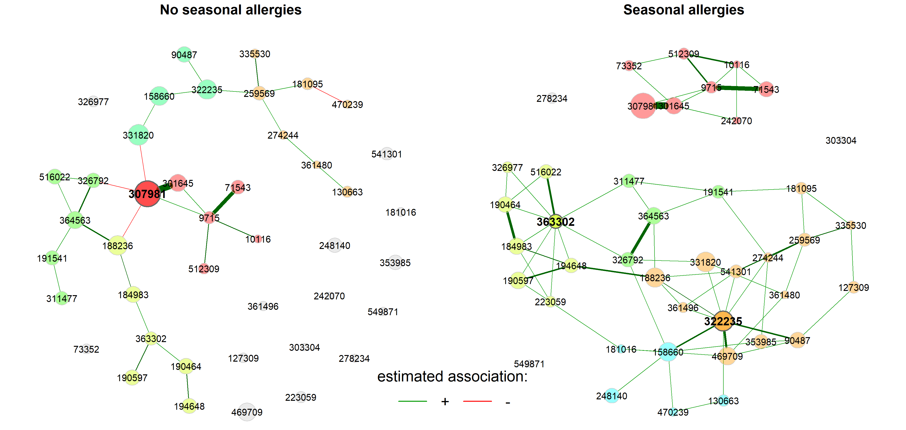
Using different layouts leads to a “nice-looking” network plot for each group, however, it is difficult to identify group differences at first glance.
Thus, we now use the same layout in both groups. In the following, the layout is computed for group 1 (the left network) and taken over for group 2.
rmSingles is set to "inboth" because only nodes that are unconnected in both groups can be removed if the same layout is used.
plot(props_season,
sameLayout = TRUE,
layoutGroup = 1,
rmSingles = "inboth",
nodeSize = "mclr",
labelScale = FALSE,
cexNodes = 1.5,
cexLabels = 2.5,
cexHubLabels = 3,
cexTitle = 3.8,
groupNames = c("No seasonal allergies", "Seasonal allergies"),
hubBorderCol = "gray40")
legend("bottom", title = "estimated association:", legend = c("+","-"),
col = c("#009900","red"), inset = 0.02, cex = 4, lty = 1, lwd = 4,
bty = "n", horiz = TRUE)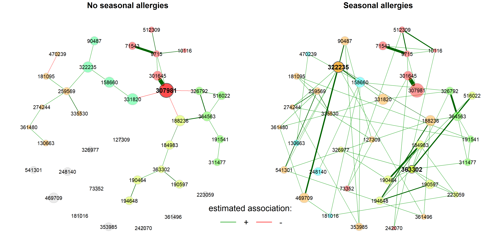
In the above plot, we can see clear differences between the groups. The OTU “322235”, for instance, is more strongly connected in the “Seasonal allergies” group than in the group without seasonal allergies, which is why it is a hub on the right, but not on the left.
However, if the layout of one group is simply taken over to the other, one of the networks (here the “seasonal allergies” group) is usually not that nice-looking due to the long edges. Therefore, NetCoMi (>= 1.0.2) offers a further option (layoutGroup = "union"), where a union of the two layouts is used in both groups. In doing so, the nodes are placed as optimal as possible equally for both networks.
The idea and R code for this functionality were provided by Christian L. Müller and Alice Sommer
plot(props_season,
sameLayout = TRUE,
repulsion = 0.95,
layoutGroup = "union",
rmSingles = "inboth",
nodeSize = "mclr",
labelScale = FALSE,
cexNodes = 1.5,
cexLabels = 2.5,
cexHubLabels = 3,
cexTitle = 3.8,
groupNames = c("No seasonal allergies", "Seasonal allergies"),
hubBorderCol = "gray40")
legend("bottom", title = "estimated association:", legend = c("+","-"),
col = c("#009900","red"), inset = 0.02, cex = 4, lty = 1, lwd = 4,
bty = "n", horiz = TRUE)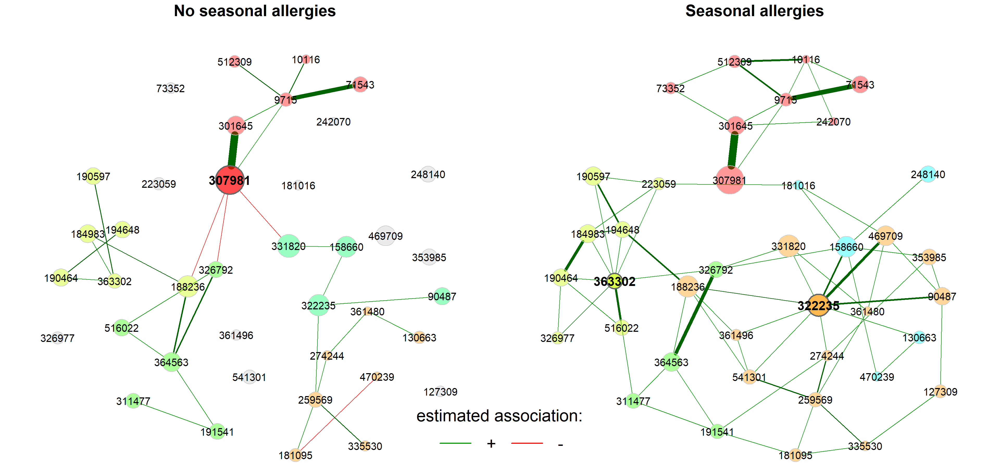
Quantitative network comparison
Since runtime is considerably increased if permutation tests are performed, we set the permTest parameter to FALSE. See the tutorial_createAssoPerm file for a network comparison including permutation tests.
Since permutation tests are still conducted for the Adjusted Rand Index, a seed should be set for reproducibility.
comp_season <- netCompare(props_season,
permTest = FALSE,
verbose = FALSE,
seed = 123456)
summary(comp_season,
groupNames = c("No allergies", "Allergies"),
showCentr = c("degree", "between", "closeness"),
numbNodes = 5)##
## Comparison of Network Properties
## ----------------------------------
## CALL:
## netCompare(x = props_season, permTest = FALSE, verbose = FALSE,
## seed = 123456)
##
## ______________________________
## Global network properties
## `````````````````````````
## Largest connected component (LCC):
## No allergies Allergies difference
## Relative LCC size 0.667 0.738 0.071
## Clustering coefficient 0.152 0.271 0.120
## Modularity 0.626 0.458 0.168
## Positive edge percentage 86.667 100.000 13.333
## Edge density 0.079 0.125 0.045
## Natural connectivity 0.045 0.044 0.002
## Vertex connectivity 1.000 1.000 0.000
## Edge connectivity 1.000 1.000 0.000
## Average dissimilarity* 0.673 0.682 0.009
## Average path length** 3.400 1.868 1.532
##
## Whole network:
## No allergies Allergies difference
## Number of components 15.000 5.000 10.000
## Clustering coefficient 0.152 0.298 0.146
## Modularity 0.626 0.557 0.069
## Positive edge percentage 86.667 100.000 13.333
## Edge density 0.035 0.081 0.046
## Natural connectivity 0.028 0.031 0.003
## -----
## *: Dissimilarity = 1 - edge weight
## **: Path length = Sum of dissimilarities along the path
##
## ______________________________
## Jaccard index (similarity betw. sets of most central nodes)
## ```````````````````````````````````````````````````````````
## Jacc P(<=Jacc) P(>=Jacc)
## degree 0.556 0.957578 0.144846
## betweenness centr. 0.333 0.650307 0.622822
## closeness centr. 0.231 0.322424 0.861268
## eigenvec. centr. 0.100 0.017593 * 0.996692
## hub taxa 0.000 0.296296 1.000000
## -----
## Jaccard index in [0,1] (1 indicates perfect agreement)
##
## ______________________________
## Adjusted Rand index (similarity betw. clusterings)
## ``````````````````````````````````````````````````
## wholeNet LCC
## ARI 0.232 0.355
## p-value 0.000 0.000
## -----
## ARI in [-1,1] with ARI=1: perfect agreement betw. clusterings
## ARI=0: expected for two random clusterings
## p-value: permutation test (n=1000) with null hypothesis ARI=0
##
## ______________________________
## Graphlet Correlation Distance
## `````````````````````````````
## wholeNet LCC
## GCD 1.577 1.863
## -----
## GCD >= 0 (GCD=0 indicates perfect agreement between GCMs)
##
## ______________________________
## Centrality measures
## - In decreasing order
## - Computed for the whole network
## ````````````````````````````````````
## Degree (unnormalized):
## No allergies Allergies abs.diff.
## 322235 3 9 6
## 363302 3 9 6
## 469709 0 4 4
## 158660 2 6 4
## 223059 0 4 4
##
## Betweenness centrality (unnormalized):
## No allergies Allergies abs.diff.
## 307981 231 0 231
## 331820 170 9 161
## 259569 137 34 103
## 158660 162 80 82
## 184983 92 12 80
##
## Closeness centrality (unnormalized):
## No allergies Allergies abs.diff.
## 469709 0 21.203 21.203
## 541301 0 20.942 20.942
## 181016 0 19.498 19.498
## 361496 0 19.349 19.349
## 223059 0 19.261 19.261
##
## _________________________________________________________
## Significance codes: ***: 0.001, **: 0.01, *: 0.05, .: 0.1Differential networks
We now build a differential association network, where two nodes are connected if they are differentially associated between the two groups.
Due to its very short execution time, we use Pearson’s correlations for estimating associations between OTUs.
Fisher’s z-test is applied for identifying differentially correlated OTUs. Multiple testing adjustment is done by controlling the local false discovery rate.
Note: sparsMethod is set to "none", just to be able to include all differential associations in the association network plot (see below). However, the differential network is always based on the estimated association matrices before sparsification (the assoEst1 and assoEst2 matrices returned by netConstruct()).
net_season_pears <- netConstruct(data = amgut_season_no,
data2 = amgut_season_yes,
filtTax = "highestVar",
filtTaxPar = list(highestVar = 50),
measure = "pearson",
normMethod = "clr",
sparsMethod = "none",
thresh = 0.2,
verbose = 3)## Checking input arguments ... Done.
## Infos about changed arguments:
## Zero replacement needed for clr transformation. "multRepl" used.
##
## Data filtering ...
## 95 taxa removed in each data set.
## 1 rows with zero sum removed in group 1.
## 1 rows with zero sum removed in group 2.
## 43 taxa and 162 samples remaining in group 1.
## 43 taxa and 120 samples remaining in group 2.
##
## Zero treatment in group 1:
## Execute multRepl() ... Done.
##
## Zero treatment in group 2:
## Execute multRepl() ... Done.
##
## Normalization in group 1:
## Execute clr(){SpiecEasi} ... Done.
##
## Normalization in group 2:
## Execute clr(){SpiecEasi} ... Done.
##
## Calculate 'pearson' associations ... Done.
##
## Calculate associations in group 2 ... Done.
# Differential network construction
diff_season <- diffnet(net_season_pears,
diffMethod = "fisherTest",
adjust = "lfdr")## Checking input arguments ...
## Done.
## Adjust for multiple testing using 'lfdr' ...
## Execute fdrtool() ...
## Step 1... determine cutoff point
## Step 2... estimate parameters of null distribution and eta0
## Step 3... compute p-values and estimate empirical PDF/CDF
## Step 4... compute q-values and local fdr
## Done.
# Differential network plot
plot(diff_season,
cexNodes = 0.8,
cexLegend = 3,
cexTitle = 4,
mar = c(2,2,8,5),
legendGroupnames = c("group 'no'", "group 'yes'"),
legendPos = c(0.7,1.6))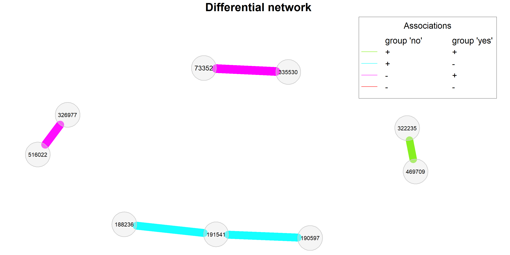 In the differential network shown above, edge colors represent the direction of associations in the two groups. If, for instance, two OTUs are positively associated in group 1 and negatively associated in group 2 (such as ‘191541’ and ‘188236’), the respective edge is colored in cyan.
We also take a look at the corresponding associations by constructing association networks that include only the differentially associated OTUs.
props_season_pears <- netAnalyze(net_season_pears,
clustMethod = "cluster_fast_greedy",
weightDeg = TRUE,
normDeg = FALSE,
gcmHeat = FALSE)
# Identify the differentially associated OTUs
diffmat_sums <- rowSums(diff_season$diffAdjustMat)
diff_asso_names <- names(diffmat_sums[diffmat_sums > 0])
plot(props_season_pears,
nodeFilter = "names",
nodeFilterPar = diff_asso_names,
nodeColor = "gray",
highlightHubs = FALSE,
sameLayout = TRUE,
layoutGroup = "union",
rmSingles = FALSE,
nodeSize = "clr",
edgeTranspHigh = 20,
labelScale = FALSE,
cexNodes = 1.5,
cexLabels = 3,
cexTitle = 3.8,
groupNames = c("No seasonal allergies", "Seasonal allergies"),
hubBorderCol = "gray40")
legend(-0.15,-0.7, title = "estimated correlation:", legend = c("+","-"),
col = c("#009900","red"), inset = 0.05, cex = 4, lty = 1, lwd = 4,
bty = "n", horiz = TRUE)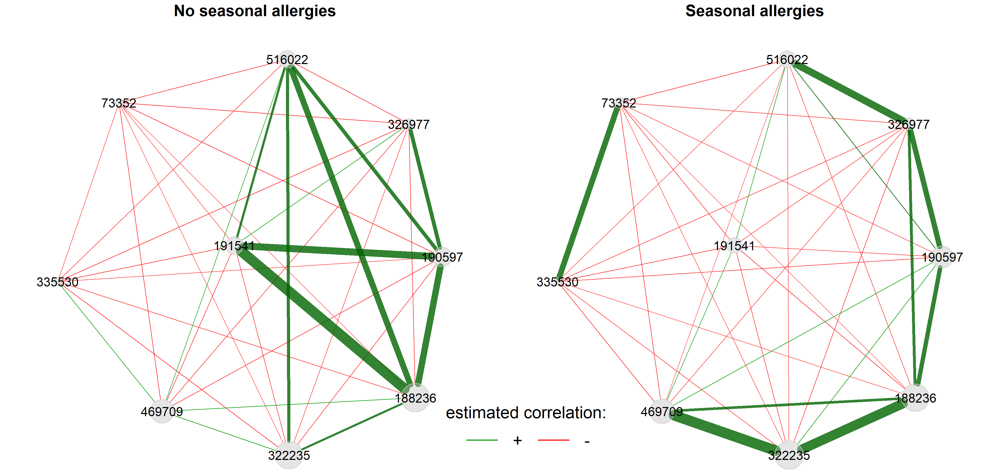
We can see that the correlation between the aforementioned OTUs ‘191541’ and ‘188236’ is strongly positive in the left group and negative in the right group.
Dissimilarity-based Networks
If a dissimilarity measure is used for network construction, nodes are subjects instead of OTUs. The estimated dissimilarities are transformed into similarities, which are used as edge weights so that subjects with a similar microbial composition are placed close together in the network plot.
We construct a single network using Aitchison’s distance being suitable for the application on compositional data.
Since the Aitchison distance is based on the clr-transformation, zeros in the data need to be replaced.
The network is sparsified using the k-nearest neighbor (knn) algorithm.
net_diss <- netConstruct(amgut1.filt,
measure = "aitchison",
zeroMethod = "multRepl",
sparsMethod = "knn",
kNeighbor = 3,
verbose = 3)## Checking input arguments ... Done.
## Infos about changed arguments:
## Counts normalized to fractions for measure "aitchison".
##
## 127 taxa and 289 samples remaining.
##
## Zero treatment:
## Execute multRepl() ... Done.
##
## Normalization:
## Counts normalized by total sum scaling.
##
## Calculate 'aitchison' dissimilarities ... Done.
##
## Sparsify dissimilarities via 'knn' ... Registered S3 methods overwritten by 'proxy':
## method from
## print.registry_field registry
## print.registry_entry registry
## Done.For cluster detection, we use hierarchical clustering with average linkage. Internally, k=3 is passed to cutree() from stats package so that the tree is cut into 3 clusters.
props_diss <- netAnalyze(net_diss,
clustMethod = "hierarchical",
clustPar = list(method = "average", k = 3),
hubPar = "eigenvector")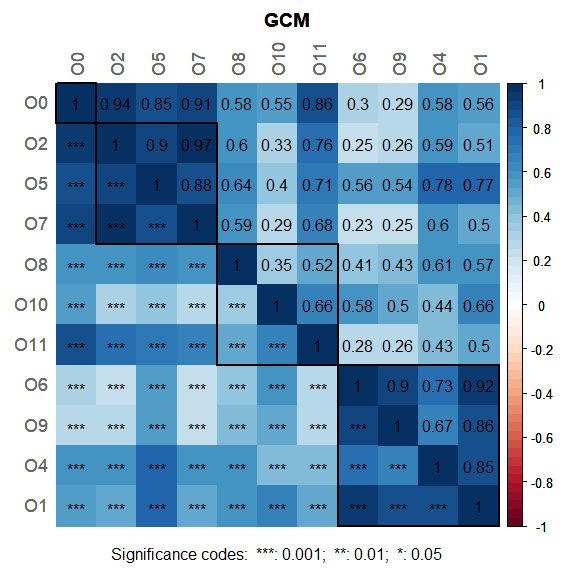
plot(props_diss,
nodeColor = "cluster",
nodeSize = "eigenvector",
hubTransp = 40,
edgeTranspLow = 60,
charToRm = "00000",
shortenLabels = "simple",
labelLength = 6,
mar = c(1, 3, 3, 5))
# get green color with 50% transparency
green2 <- colToTransp("#009900", 40)
legend(0.4, 1.1,
cex = 2.2,
legend = c("high similarity (low Aitchison distance)",
"low similarity (high Aitchison distance)"),
lty = 1,
lwd = c(3, 1),
col = c("darkgreen", green2),
bty = "n")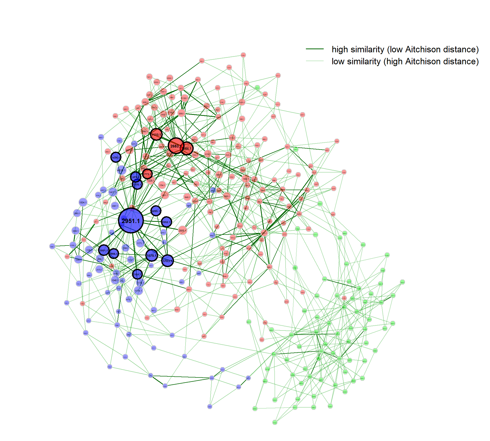
In this dissimilarity-based network, hubs are interpreted as samples with a microbial composition similar to that of many other samples in the data set.
Soil microbiome example
Here is the code for reproducing the network plot shown at the beginning.
data("soilrep")
soil_warm_yes <- phyloseq::subset_samples(soilrep, warmed == "yes")
soil_warm_no <- phyloseq::subset_samples(soilrep, warmed == "no")
net_seas_p <- netConstruct(soil_warm_yes, soil_warm_no,
filtTax = "highestVar",
filtTaxPar = list(highestVar = 500),
zeroMethod = "pseudo",
normMethod = "clr",
measure = "pearson",
verbose = 0)
netprops1 <- netAnalyze(net_seas_p, clustMethod = "cluster_fast_greedy")
nclust <- as.numeric(max(names(table(netprops1$clustering$clust1))))
col <- c(topo.colors(nclust), rainbow(6))
plot(netprops1,
sameLayout = TRUE,
layoutGroup = "union",
colorVec = col,
borderCol = "gray40",
nodeSize = "degree",
cexNodes = 0.9,
nodeSizeSpread = 3,
edgeTranspLow = 80,
edgeTranspHigh = 50,
groupNames = c("Warming", "Non-warming"),
showTitle = TRUE,
cexTitle = 2.8,
mar = c(1,1,3,1),
repulsion = 0.9,
labels = FALSE,
rmSingles = "inboth",
nodeFilter = "clustMin",
nodeFilterPar = 10,
nodeTransp = 50,
hubTransp = 30)